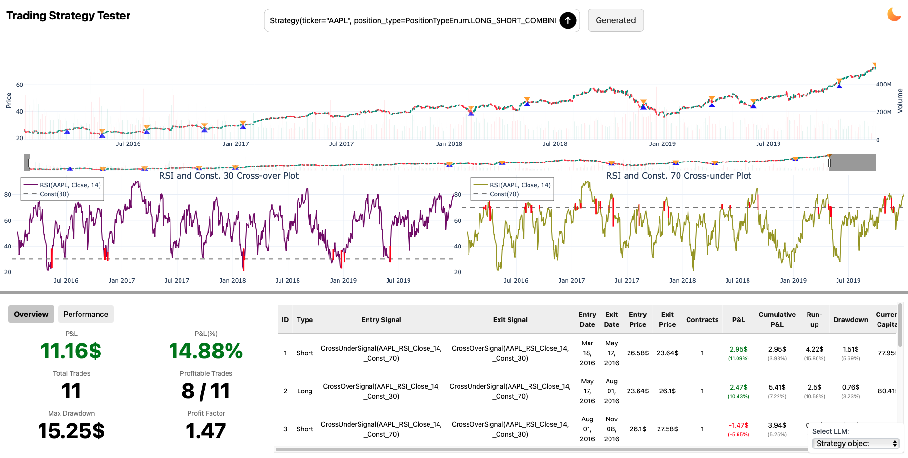
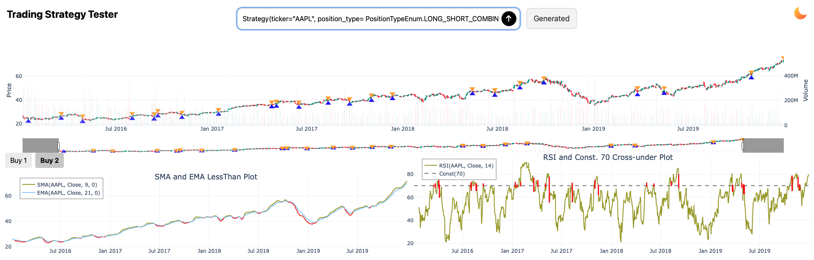
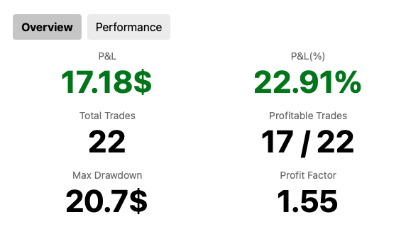
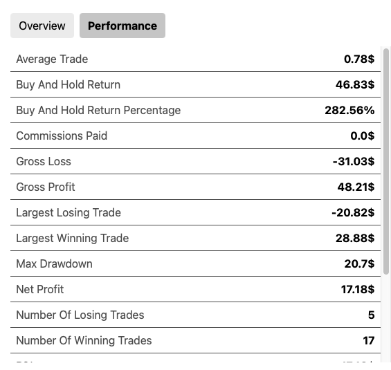
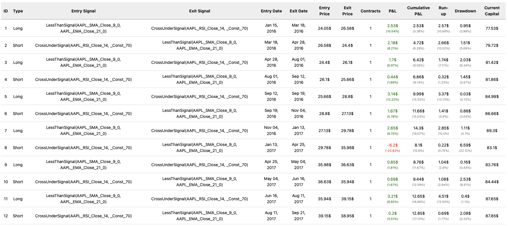

Strategy results
Once your strategy is executed, you can view the results in the web application. The results are separated into three sections: Graphs, Statistics, and Trades. The results screen looks like this:

Before we dive into the details of each section, let's talk about the Generated button next to the prompt window that appears after you submit the prompt.
After every prompt is submitted it is processed by the LLM that creates the Strategy object. After LLM generates the Strategy it goes through the validation process. The validation process checks if the Strategy object is valid and if it is not it can fix some issues or use default values. After the Strategy object is valid it is executed and the strategy that gets executed is hidden under the Generated button. If you hover over the Generated button, you will see the generated Strategy object. And if you hover over Generated button it changes to Copy and you can copy the generated Strategy object to the clipboard. This way you can see what the LLM generated and if you are not satisfied with the generated Strategy object you can modify it and submit it again as Strategy object.
If the Strategy object generated by the LLM is not valid there are two scenarios that can happen:
- The validator can fix the issues and generate a valid
Strategyobject. In this case there will be new button next toGeneratedbutton that saysChanges. If you hover over theChangesbutton, you will see the changes that were made to theStrategyobject. - The validator cannot fix the issues and the
Strategyobject is not valid. In this case you will still be able to see the generatedStrategyobject but you will not be able to execute it. You will get an error box with the message of what went wrong when validating theStrategyobject.
Let's take a look at the three sections of the results screen.
Graphs
The Graphs section displays the graphs generated by the strategy.

Graph section is divided into three parts.
- Price: This graph shows the price of the ticker, volume, and entry and exit points of the strategy. The entry points are marked with blue triangles and the exit points are marked with orange triangles. The volume is shown as a bar graph below the price graph. On the left side of the price graph is the scale of the price and on the right side is the scale of the volume. Thanks to
Plotlylibrary you can zoom in and out of the graph and hover over the points to see the exact values. - Buy: This section is always bottom left from the price graph. It shows the buy signals generated by the strategy for each condition. If there are multiple conditions with their own
TradingSeries, the graphs are separated and you can click between them by clickingBuy nbutton wherenis the number of the condition. - Sell: This section is always bottom right from the price graph. It shows the sell signals generated by the strategy for each condition. If there are multiple conditions with their own
TradingSeries, the graphs are separated and you can click between them by clickingSell nbutton wherenis the number of the condition.
Not all the conditions generate graphs. If there is no graph for either section Buy or Sell the bottom section will be taken by the one where there are graphs. For example if there are no graphs for Buy section, the Sell section will take the whole bottom part of the screen and the Buy section will not be shown. And if there are no graphs for both sections, price graph will take the whole graph section.
Under the Graphs section there is a divider that separates the graphs from the Statistics and Trades sections. The divider is a horizontal line that can be moved up and down to adjust the size of the graphs section.
Statistics
The Statistics section is in the bottom left corner of the screen. It is divided into two parts that can be switched between by buttons. The sections are:
Overview:

Performance:

In the Overview section you can see the most important statistics about the strategy. The statistics are:
- Profit and Loss and Profit and Loss percentage
- Number of all trades and number of winning trades
- Maximum drawdown
- Profit factor
In the Performance section you can see the performance of the strategy which is basically more detailed statistics about the strategy. The statistics that are different from the Overview section are:
- Average profit per trade
- Buy and hold return and percentage
- Commissions paid
- Gross profit and loss
- Largest winning and losing trades
- Net profit
- Number of winning and losing trades
- Sharpe ratio
Trades
The last section is the Trades section. It is in the bottom right corner of the screen.

It shows the trades generated by the strategy. The trades are shown in a table with the following columns:
- ID
- Entry signal
- Exit signal
- Entry date
- Exit date
- Entry price
- Exit price
- Number of contracts
- Profit and Loss
- Cumulative profit and loss
- Run up
- Drawdown
- Current capital
In the Entry and Exit Signals there is always a condition that triggered the signal. Then there are TradingSeries in each of the conditions that have the following format:
Ticker_TradingSeriesName_TradingSeriesParameters
So for example for RSI TradingSeries with source series the Close price andlength=14 the format would be:
RSI_AAPL_Close_14
If no parameters were specified the default ones are used. You can see the parameters of each TradingSeries in the TradingSeries section of the documentation.